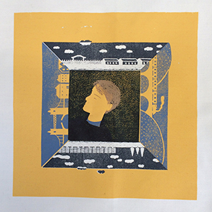

Screen Printing #1
Screen Printing #2
Screen Printing #3

Screen Printing #4
Screen Printing #5
Screen printing is a printing technique whereby a mesh is used to transfer ink onto a substrate, except in areas made impermeable to the ink by a blocking stencil. A blade or squeegee is moved across the screen to fill the open mesh apertures with ink, and a reverse stroke then causes the screen to touch the substrate momentarily along a line of contact. This causes the ink to wet the substrate and be pulled out of the mesh apertures as the screen springs back after the blade has passed.
It is also a stencil method of print making in which a design is imposed on a screen of polyester or other fine mesh, with blank areas coated with an impermeable substance. Ink is forced into the mesh openings by the fill blade or squeegee and by wetting the substrate, transferred onto the printing surface during the squeegee stroke. As the screen rebounds away from the substrate the ink remains on the substrate. It is also known as silk-screen, screen, serigraphy, and serigraph printing. One color is printed at a time, so several screens can be used to produce a multicoloured image or design.
Screen Printing #1
Screen Printing #2
Screen Printing #3
Screen Printing #4
Screen Printing #5